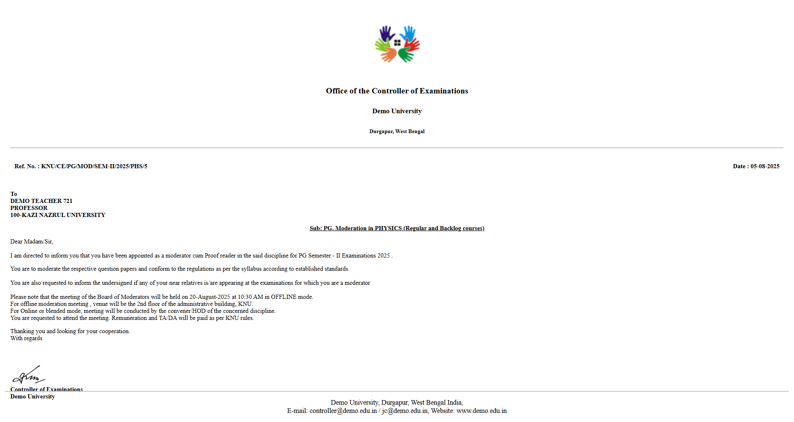

Moderator Section

This module allows administrators to manage exam moderators. By clicking on the Moderator option in the main dashboard, the user is redirected to the dedicated Moderator Dashboard.
This module allows administrators to manage exam moderators. By clicking on the Moderator option in the main dashboard, the user is redirected to the dedicated Moderator Dashboard.

In this section, the user can search for existing moderators within the system. Simply select the required criteria from the dropdown filters and click the Search button to view results.
To register a single moderator manually, the user can click the Add Moderator button. This will open the registration form.

For adding multiple moderators at once, the system supports a bulk import feature via Excel. Click the Import Moderator button to begin.

Once the import option is selected, the upload interface will appear as shown below:

Steps for Bulk Upload:
The Moderator List section displays all registered moderators. Use the controls provided in the list view to manage accounts.

Below is a sample view of the Appointment Letter / Edit interface.
